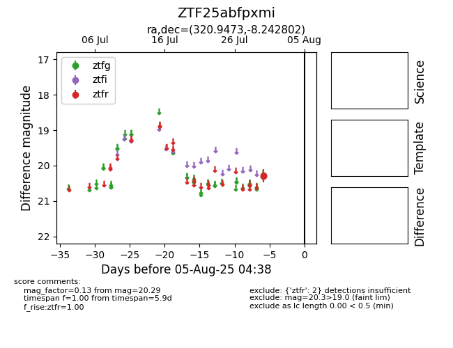

Target ZTF25abfpxmi at 2025-08-05 04:38, see:
FINK: fink-portal.org/ZTF25abfpxmi
Lasair: lasair-ztf.lsst.ac.uk/objects/ZTF25abfpxmi
ALeRCE: alerce.online/object/ZTF25abfpxmi
alt names
ZTF25abfpxmi (ztf,fink)
coordinates:
equatorial (ra, dec) = (320.9473,-8.24280)
galactic (l, b) = (43.8873,-37.49616)
photometry
last ztfr=20.29
2 ztfr detections
